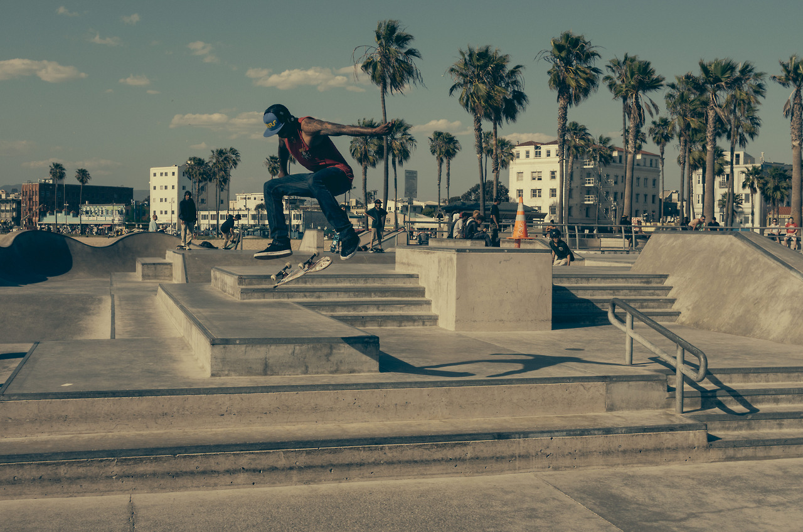

Del pasado Masters Skateboarding Fest en Saltillo Coahuila.
27 octubre, 2013Es para el equipo de Cruz.e todo un logro el poder ver nuestro “banner” en un evento tan importante en el skate del norte del país. Seguiremos trabajando duro para estar cerca de la banda y pagarles por todo su apoyo durante esta etapa de lanzamiento. Con muchas ganas de seguir abriendo brecha y con las pilas bien bien puestas. Pura buena vibra de corazón a todos.
